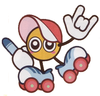

Kirby
 De: La Frikipedia, la enciclopedia extremadamente seria.
De: La Frikipedia, la enciclopedia extremadamente seria.
| De la serie personajos de videojuegos:
|
| Kirby
|
|
|
| Kirby Arguiñano preparando un caldo rico rico y con fundamento
|
|
| Creador
|
Masahiro Sakurai
|
| Distribuidor
|
Nintendo
|
| Ataque favorito
|
Absorber
|
| Juegos en los que aparece
|
Muchos
|
| Punto débil
|
Las Balas
|
| Nacimiento
|
En Pascua
|
| Muerte
|
Tal vez nunca
|
| Heroicidades
|
Salvar Dreamland
|
Kirby es una bola rosa fabricada por la empresa Noentiendo que reside en una casita a primera linea de playa en Dreamland. Su misión es salvar a Dreamland de los numerosos peligros que acechan a esta.
Biografía
Imagen en la que Kirby no está en sus mejores momentos
Cuando deje de posar para la foto y se de la vuelta se va llevar una gran sorpresa
Kirby tuvo una etapa superheroica
Kirby vivía en otra galaxia, la cual tuvo que ser desalojada porque se estaba replegando sobre si misma. La razón de esto es que Kirby viajó varias veces al pasado en un DeLorean para poder comerse la misma pizza varias veces.
Tras una apasionante aventura intergaláctica en la que descubre que el significado de la vida es 42, llegó al planeta Pop Star en un meteorito que transportaba Clefairys desde la Luna, se hizo pasar por uno de ellos hasta que fue a parar a Dreamland. Aunque cuando el meteorito impacto contra Pop Star se llevo un golpe que le hizo perder la memoria.
Al llegar allí quiso tomar el control pero se le había adelantado Dedede, así que intentó derrocarlo, aunque al hacerlo todos le tomaron por un héroe.
Llegó a ser adorado por los habitantes de Dreamland que le daban sus mejores cosechas y sacrificaban a sus mejores soldados solo para divertirle.
Un día se enteró de que un caballero llamado Meta Knight le había seguido a Dreamland. Entonces Kirby llamó a su nubekinton estrella voladora y atacó su nave. Al llegar a donde Meta Knight estaba le explicó que el venía a hacer la misión que le habían encomendado a Kirby cuando su galaxia implosionó, destruir Pop Star. Meta Knight se alegró al ver que Kirby estaba vivo ya que Kirby es el hijo del primo, del abuelo, del sobrino del cuñado de Meta Knight, Kirby rechaza esta realidad pero acaba siendo convencido por Meta Knight y se pasa al lado oscuro. El lado oscuro consiste en pasar de la misión, irse de cañas y hacer un poco de vandalismo público (tirar contenedores, meter propaganda en los portales de los edificios, etc).
Después ocurrieron una serie de gilipolleces sin sentido: una pesadilla invade el pueblo e impide que la gente tenga sueños, unas ratas le roban la merienda a Kirby, una nube oscura intenta comerse a Kirby cual chicle de fresa, etc.
Fama
En 1990 nadie apostaba por Kirby, estaba en la cárcel por tráfico de drogas y armas. Pero gracias al programa de reintegración de reclusos consiguió volver a ser un buen ciudadano, no sin antes pasar por numerosas terapias [1] . Al salir de la cárcel se alistó en el ejército. Allí fue honrosamente condecorado por salvar a la Tierra en la Guerra de los mundos, tras lo cual se hizo la película[2], después vinieron los videojuegos y más tarde la serie, la fama de Kirby aumentaba como la espuma.
Residencia
Kirby vive en Dreamland, un hermoso país tropical tercermundista. El país quedó en bancarrota después de jugar todo sus riquezas en la bolsa. La situación es tan caótica que ha tenido que vender una dimensión y ahora todos sus habitantes se tienen que trasladar en 2 dimensiones. Actualmente se encuentra en vías de desarrollo, muestra de ello son los numerosos esfuerzos del gobierno por construir escuelas y hospitales. Pero los índices de analfabetismo son muy elevados, prueba de esto es que tan solo una minoría de la población conoce la escritura.
Nuestro héroe Kirby no sabe hablar y mucho menos escribir ya que nunca pudo ir a al escuela.
El Rey Dedede no pudo aguantar el poder de Kirby Bomba
Si puedes verlo, ya estás muerto
Hasta Dedede sabía que Meta Knight era un buen modelo a seguir
Esta es la venganza de Kirby
 Paint Roller dice:¡Heavy Metal!
Marx está chifla chifla chifla chifla chifla chifla chiflado
Relaciones
Cuando llegó a Dreamland Kirby hizo muchos amigos pero también enemigos, ya que es imposible llevarse bien con todo el mundo.
Amigos
Los amigos de Kirby suelen ser animales (lo cual demuestra su tendencia zoofílica), hicieron una serie de ellos que se emitió en el canal DDD aunque tuvo que ser cancelada cuando los amigos de Kirby desaparecieron en misteriosas circunstancias [3].
Enemigos
- Rey Dedede: Es un pingüino con un gran mazo, que usa para jugar al guacamole. Ha sido el único que al enfrentarse con Kirby se atrevió a metérselo en el estómago (jugada que no le salió muy bien ya que en ese momento Kirby acababa de absorber a un enemigo con poder bomba). Aparte es un personaje seleccionable del Super Smash Bros Brawl.
- Meta Knight: Es el peor enemigo de Kirby, aunque puede parecerlo, no es malo, solo es que es poco comunicativo y tiene mucho orgullo. Debajo de su máscara esconde una cara muy parecida a la de Kirby, lo cual es muy sospechoso, así que se contrato a un detective para que lo investigase, actualmente L está al cargo de la investigación. Gracias a su máscara misteriosa y a su buen manejo de la espada fue contratado en el último relleno de Bleach como Vizard, lo cual, le ha venido muy bien para costearse el caro combustible de su nave interespacial, la Hallberd. También es un personaje seleccionable del Super Smash Bros Brawl.
- El Árbol: Porque en todas partes tiene que haber alguien que plante un árbol en el lugar menos oportuno. También conocido como Wisky Woods, este es un árbol de
judías mágicas manzanas, y si; es un ser inmóbil pero eso no impide que sea uno de los enemigos de Kirby, este árbol es muy viejo. Para empezar, fue el árbol por el cual Dios desterró a los seres humanos de el paraíso. En la Edad Media fue el árbol en el que se ahorcó más gente (47 criminales y 12 brujas). Fue el árbol que le dió un manzanazo en la cabeza a Newton, pero lo tuvieron que retirar de los juegos, ya que Seprona los denunció porque consideraba inapropiado que se tuviera que matar a un pobre árbol para pasarse un juego.
- Mario: Kirby siempre ha tenido una gran rivalidad con Mario en todas las entregas de la saga Super Smash Bros. Kirby habría sido el ojo derecho de la empresa Nintendo sino fuera porque el actual jefe de la empresa Shigeru Miyamoto es el padre de Mario, el gran favorecido. Kirby quedó relegado a un 2º lugar y nunca llegó a ser el número 1.
- Kracko: Es como la nube voladora de Dragon Ball solo que tiene un gran ojo y está rodeado de pinchos. En realidad es un pokémon de tipo eléctrico-volador que nunca llegó a ser popular debido a que Zapdos le derrotó en el valle del fin.
- Paint Roller: Es un enemigo al que le encanta dibujar líneas que luego tú tienes que dibujar, para ganarle tienes que hacer a la perfección unos 20 cuadros de Picasso en 10 minutos porque si no sale de la DS y te mata como la niña de The Ring.
- Marx: En su juego Kirby Super Star, Kirby fue usado como un elemento contra el comunismo. En ese juego Se ridiculizaba a Marx haciéndole parecer un chiflado. En ese juego Marx hizo algo por lo que nunca fue premiado él inventó el Shoop Da Whoop[4].
Puede parecer inofensiva, pero está rellena de esteroides
Poderes
Entre los poderes de Kirby caben destacar:
- El poder inhalar aire y destilarlo usando substancias químicas de su estómago hasta convertirlo en helio para poder volar.
- La inteligencia, puesto que cuando todos los personajes de Nintendo eligieron poderes, Kirby eligió tener el poder de tener todos los poderes.
- Es indestructible (de verdad, no como esa estrella de la muerte) pero solo durante un tiempo limitado después de comerse una piruleta como la de la foto.
- Puede absorber poderes cocinando a enemigos y a objetos (los poderes absorbidos variarán según las especies y el aliño utilizados en cada ocasión).
- Más de 400.000 transformaciones cada una con poderes diferentes. Ver ejemplo de algunas [5].
Videojuegos en los que aparece Kirby
Los videojuegos en los que Kirby hace su aparición se pueden dividir en 4 grupos:
La saga de Kirby
La saga de Kirby se compone por un gran número de videojuegos en los que solo hay 2 o 3 videojuegos de Kirby, porque el resto son un montón de plagios y remakes.
- Kirby´s Dreamland: Dedede roba toda la comida del reino de Dreamland para montar una gran fiesta. Cuando Kirby se enteró de que no había sido invitado, entró en cólera y se puso a matar a todos los amigos que Dedede había invitado. Al final del juego, Kirby mata a Dedede y se convierte en un globo gigante que se lleva toda la comida (con el castillo en la que se encontraba esta) a su propia fiesta.
- Kirby´s Adventure: Dedede se estaba bañando en una fuente, sin querer rompe una varita y como esta es propiedad del ayuntamiento se asusta. Con la intención de no tener que correr con los gastos la reparte entre sus amigos para que la oculten. Kirby, que por aquel entonces entonces trabajaba para el ayuntamiento de Dreamland, fue a buscar a cada uno de los amigos de Dedede y
darles una paliza juntar los trozos de la varita para que este tuviese que responder en los tribunales. Cuando junta todos los trozos de la varita de estrella, hace tanto ruido que despierta al alguacil (llamado pesadilla) que lo ataca cruelmente.
- Kirby´s Pinball Land: Kirby es mutilado y se queda sin brazos ni piernas y aún encima el juego consiste en golpearlo con unos palos para ver como rebota.
- Kirby's Dream Course: Dado que el "juguemos al pinball con Kirby" fue un éxito, se sacó este juego en el que el objetivo es golpear a Kirby como si fuese una pelota de golf para meterlo en un agujero.
- Kirby´s Ghost Trap: Es una copia barata de Doctor Mario, la cuál es una copia barata del Tetris.
- Kirby Dreamland 2: Es un juego en el que unos arcoiris que conectan unas islas son robados por Dark Matter, esta posee al Rey Dedede. En este juego Kirby tiene que absorber al cura que protagonizó la película El Exorcista y realizarle un exorcismo al Rey Dedede.
- Kirby´s Block Ball: En este juego se repite el popular patrón de despedazar a Kirby hasta que solo quede una bola y hacerle rebotar, en concreto es un plagio del arkanoid.
- Kirby Super Star: Kirby absorbe a sus enemigos y les lava el cerebro para convertirlos en sus
esclavos aliados. En la caja decía 6 juegos por el precio de 1, razón por la que se vendieron todos a la primera semana.
- Kirby Star Stacker: Este es directamente otro plagio del Tetris.
- BS Kirby no Omotya Bako Baseball: Es un juego en el que tienes que jugar al baseball... ya está, Kirby solo sale en la portada y ya es un juego de Kirby.
- Kirby´s Dream Land 3: Un juego en el que podían jugar 2 personas, una manejando a Kirby y otra manejando a Gooey, un bicho igual que Kirby con los mismos poderes solo que este en vez de inhalar utiliza la lengua (plagio de Yoshi).
- Kirby No Kira Kira Kids: Remake del Star Stacker, solo que traía de novedad que Kirby se encontraba con una Death Note en Dreamland y se ponía a matar unos niños. Debido a su gran contenido en violencia, sexo y drogas solo se sacó a la venta en Japón.
- Kirby 64: The Cristal Shards: En este juego Kirby puede combinar 2 poderes a la vez, gracias al poder de la salsa de soja. Basicamente tienes que ir por todo Dreamland juntando trozos de estrella para enfrentarte contra O2, un enemigo poseido por Dark Matter (enemigo recursivo en los juegos de Kirby).
- Kirby Tilt'n'Tumble: Kirby se queda atrapado en tu Game Boy y tienes que agitar esta para ver como rebota (la cantidad de puntos que consigas depende de cuantos huesos le rompas).
- Kirby nightmare in Dream Land: Es un remake que cumple la norma de los remake de Nintendo, la cuál dice "Tienes que pagar más por la misma mierda que compraste hace unos años porque ahora tiene mejores gráficos y le hemos metido 7 u 8 fases nuevas". Las ventajas de este contra el original son que dispone de una amplia sección de 3 microjuegos donde elegir y un nivel de dificultad ínfimo.
- Kirby Air Ride: Es un plagio del F-Zero.
- Kirby and the Amazing Mirror: Kirby se queda atrapado en un salón de espejos y tienes que ayudarle a salir de allí. En este juego realmente no hay enemigos, lo que pasa es que los espejos son de los que cambian la forma y el color de las cosas y Kirby los confunde con enemigos. Para mejor jugabilidad Kirby puede invocar a 3 amigos a través de un
par de pergaminos ninja móvil.
- Kirby y el pincel del poder: Aparece una bruja que quiere convertir a todo Dreamland en cuadros, Kirby la ataca y esta convierte a Kirby en una bola pero es tan idiota de dejarse su punzón mágico con el que puedes dirigir a Kirby para hacer cosas como dibujar un montón de líneas que se borran a los 3 segundos de haberlas pintado.
- Kirby ¡Roedores al ataque!: Este es el juego con el mejor argumento de todos: Kirby está a punto de comerse un rico pastel. Aparecen una sombra misteriosa que resulta ser una rata gigante. La rata se lleva el pastel. Kirby jura venganza. Al final del juego Kirby salva al mundo pero no consigue recuperar su pastel... un final triste.
- Kirby Super Star Ultra: Este juego bate el record de remake. Es un juego constituido por una serie de minijuegos que se hacen remake unos a otros y aún encima es un remake del Kirby Super Star.
La saga Super Smash Bros
Kirby es de los primeros personajes que ha habido en el Super Smash Bros. Es uno de los mejores personajes ya que:
- Es el personaje que más alto puede saltar.
- Puede absorber el poder de cualquier enemigo y hacerlo con la misma potencia que este.
- Es ágil y veloz.
- Puede convertirse en piedra para que no le afecte ningún ataque.
Por supuesto nada de esto tiene que ver con que la empresa que se dedica a hacer los juegos de Kirby (Hal Laboraty Inc.) sea la misma que hace los de Super Smash Bros.
Todos los personajes del juego odian a Kirby
Cancelaciones
Ha habido juegos de Kirby muy buenos que después de hacerse y ser anunciados al público fueron misteriosamente cancelados... nadie sabe a que es debido esto y porque se cancelaron de repente y sin dar explicaciones, aunque corre el rumor de que se les olvidó actualizar el antivirus y se les jodió todo.
Anuncios
Se han anunciado nuevos juegos de Kirby, el último para Nintendo DS, se llama Cocina Con Kirby. En el Kirby te enseña a cocinar a tus enemigos, con recetas de mas de 30 paises diferentes.
Anime
Hoshi no Kirby es una serie de exactamente 100 capítulos, en la que Kirby es un guerrero estelar y Meta Knight un guerrero estelar retirado (la ciática).
Su argumento se basa en no hacer caso en absolutamente nada al argumento de los videojuegos y presentar una serie de personajes estúpidos con lo que los niños suelen encariñarse.
Como es una serie para niños aparecen un montón de armas y de horribles monstruos.
Tras una serie de absurdos capítulos en los que Kirby sólo se dedica a comer (líder de audiencias en Japón) se descubre que al malo final (pesadilla) se le puede matar con una simple varita mágica (que tontería ¿no?
Transformaciones más conocidas
Kirby (con paraguas incluído)
Kirby... bueno, sobran las palabras
Kirby surfero del espacio
¿Sabías que...
- ...la palabra latina Kirbyus significa aspiradora?
- ...Kirby luchador ganó a Rocky en varias ocasiones no consecutivas?
- ...a Kirby Aizen?
- ...este artículo es 100 veces mejor que este otro?
- ...lo anterior era un golpe muy bajo?
- ...Kirby fuego se utiliza para encender barbacoas?
- ...Kirby flatulencia es 10 veces más asqueroso que Kirby Wario?
- ...Kirby papel se quedó así después de estar metido entre las páginas de la Biblia?
- ...Kirby no come ni engulle como un pato sino que succiona como una aspiradora?
- ...Hoshi no Kirby fue censurada en mas de 30 paises por su alto contenido de VIOLENCIA?
- ...todos esos paises acababan en -istán?
- ...Meta Knight se mete Meta Speed para ser tan rápido?
- ...Kirby es también el nombre de un potente desatascador?
- ...Kirby dirige una tienda?
- ...una vez un Kirby se comió otro Kirby y luego el otro Kirby se comió al primero desde dentro?
- ...Kirby se come toda la comida que enviamos a los paises pobres?
- ...la pregunta anterior explica el desvio de recursos?
Referencias
- ↑ Terapia para perder peso
- ↑ Kirby la película
- ↑ Kirby y sus amigos animales
- ↑ Marx inventó el Shoop Da Whoop
- ↑ Algunas transformaciones de Kirby
Enlaces Externos
|
|
 Shooter Shooter
 Terror Terror
 Velocidad Velocidad
 Rol Rol
 Estrategia Estrategia
 Aventuras Aventuras
 Fight! Fight!
 Clásicos Clásicos
 Deportivos Deportivos
 Aventura gráfica Aventura gráfica
 Novela visual Novela visual
 Personajes de videojuegos Personajes de videojuegos
|
Autor(es):
- Nexo
- Fordus
- Alex2610
- Roms
- Khazike Khashondo
- Azulejos
- El Sevillano
- Kuraimizu9152
- Will be End
- Davuu
Frikipedia 2005-2016, Licencia
GFDL 1.2 - Extraído por FrikiLeaks